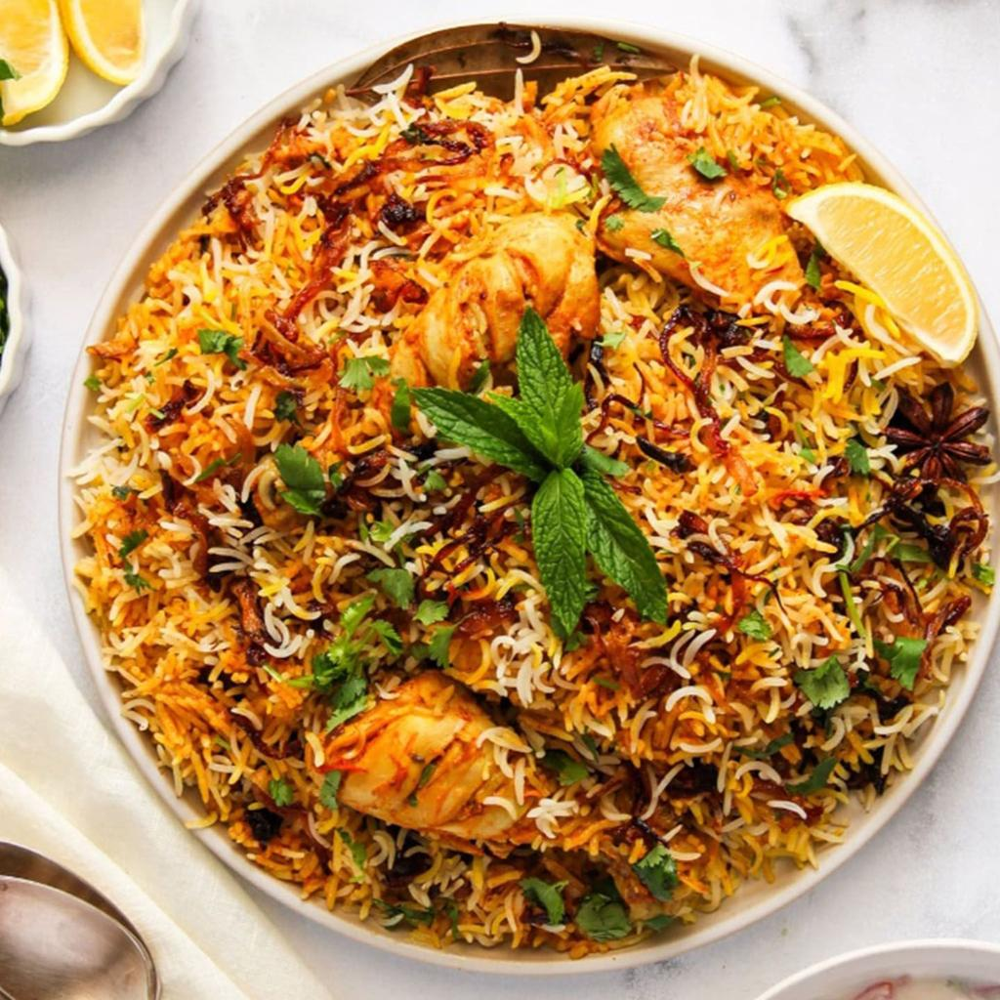

Chicken Biryani
Aromatic basmati rice cooked with spiced chicken, onions, tomatoes, yogurt, and traditional whole spices. It's a flavorful and filling main course.
Prep time: 30 minutes
Cook time: 60 minutes
Total time: 1 hour 30 minutes
Servings: 4-6
Ingredients
- 1 kg chicken, preferably bone-in pieces
- 500 g basmati rice
- 3 medium onions, thinly sliced
- 3 medium tomatoes, chopped
- 4 tbsp plain yogurt
- 1 tbsp ginger paste
- 1 tbsp garlic paste
- 5 tbsp cooking oil
- 1 tsp turmeric powder
- 1½ tsp red chili powder
- 1 tsp coriander powder
- 1 tsp garam masala
- 6–8 dried plums (alu bukhara), optional
- Salt to taste
- 2 bay leaves
- 2 black cardamoms
- 4 green cardamoms
- 4 cloves
- 1 small cinnamon stick
- 6 black peppercorns
- Fresh mint leaves
- Fresh coriander
- 3–4 green chilies
- 1 lemon
- 2 tbsp ghee
- A pinch of saffron
- 3 tbsp warm milk
Instructions
- Wash the basmati rice thoroughly and soak it in water for about 30 minutes.
- Mix chicken with yogurt, ginger, garlic, turmeric, red chili powder, coriander powder, garam masala, and salt.
- Let the chicken marinate for at least 30 minutes.
- Heat oil in a large pot.
- Add sliced onions and fry until they become deep golden brown.
- Remove about half of the fried onions and keep them aside for layering.
- Add tomatoes to the remaining onions and cook until softened.
- Add the marinated chicken and cook until the chicken is mostly done and the oil begins to separate from the masala.
- Add dried plums if using.
- In another pot, boil water with salt and whole spices.
- Add the soaked rice and cook until it is approximately 70% cooked.
- Drain the rice immediately.
- Place half of the rice over the chicken masala.
- Add mint, coriander, green chilies, and fried onions.
- Add the remaining rice as the top layer.
- Pour saffron mixed with warm milk over the rice.
- Add ghee and the remaining fried onions.
- Cover the pot tightly and cook on low heat for about 20 minutes.
- Turn off the heat and let the biryani rest for 5 minutes.
- Gently mix the layers while serving.
